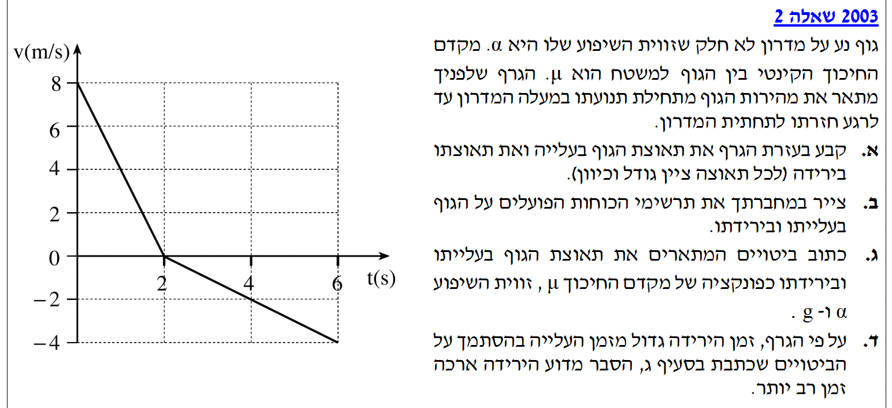
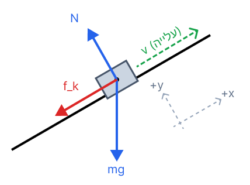
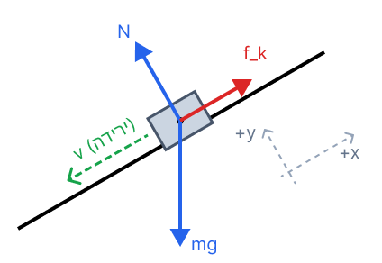

פתרון מלא: מכניקה 2003, שאלה 2
פיזיקה · 2003 · שאלה 2
מישור משופע עם חיכוך — קריאת גרף מהירות-זמן, דינמיקה, ופיתוח ביטויים אלגבריים
עודכן:
--- --:--:--

תמונת השאלה המקורית
לא נמצאה תמונה בשם question-image.png באותה תיקייה.
מה נתון?
נחלץ את הנתונים ישירות מתוך גרף המהירות-זמן שמופיע בשאלה. היחידות בגרף כבר נתונות במערכת MKS (מהירות ב-\(\text{m/s}\) וזמן ב-\(\text{s}\)), ולכן אין צורך בהמרות. נגדיר את כיוון ציר ה-\(x\) החיובי ככיוון העלייה במעלה המדרון (מכיוון שהמהירות ההתחלתית חיובית והגוף מתחיל את תנועתו במעלה המדרון).
- בזמן \(t_0 = 0\text{ s}\), המהירות היא \(v_0 = 8\text{ m/s}\).
- בזמן \(t_1 = 2\text{ s}\), המהירות מתאפסת \(v_1 = 0\text{ m/s}\) (שיא הגובה, רגע העצירה לפני החזרה). זהו שלב העלייה.
- בזמן \(t_2 = 6\text{ s}\), המהירות היא \(v_2 = -4\text{ m/s}\) (הגוף חזר לתחתית המדרון). זהו שלב הירידה.
מה מחפשים?
את תאוצת הגוף בעלייה (\(a_{up}\)) ואת תאוצת הגוף בירידה (\(a_{down}\)). נדרש למצוא גודל וכיוון עבור כל אחד מהשלבים.
נוסחאות בשימוש (מדף הנוסחאות)
\(v = v_0 + at\) נובע מכך שתאוצה היא קצב שינוי המהירות. ניתן לבודד את התאוצה ולקבל: \(a = \frac{\Delta v}{\Delta t}\)
הצבה ופתרון
1. שלב העלייה (בין \(t=0\) ל-\(t=2\)):
\[ a_{up} = \frac{v_1 - v_0}{t_1 - t_0} = \frac{0 - 8}{2 - 0} = \frac{-8}{2} = -4 \text{ m/s}^2 \]
הסימן השלילי מצביע על כך שכיוון התאוצה מנוגד לכיוון החיובי שהגדרנו (במעלה המדרון). במילים אחרות, וקטור התאוצה מכוון במורד המדרון. גודל המהירות קטן, ולכן כיוון התאוצה מנוגד לכיוון המהירות.
2. שלב הירידה (בין \(t=2\) ל-\(t=6\)):
\[ a_{down} = \frac{v_2 - v_1}{t_2 - t_1} = \frac{-4 - 0}{6 - 2} = \frac{-4}{4} = -1 \text{ m/s}^2 \]
גם כאן הסימן שלילי, כלומר התאוצה מכוונת במורד המדרון. בשלב זה הגוף נע במורד המדרון (מהירות שלילית), וגודל המהירות גדל, ולכן התאוצה והמהירות באותו כיוון.
תשובה סופית:
תאוצה בעלייה: גודל \(4 \text{ m/s}^2\), כיוון: במורד המדרון.
תאוצה בירידה: גודל \(1 \text{ m/s}^2\), כיוון: במורד המדרון.
💡 טיפ מורה: שימו לב ששיפוע גרף מהירות-זמן מייצג את התאוצה. העובדה שהשיפוע משתנה (מ-\(-4\) ל-\(-1\)) ברגע \(t=2\) מעידה על כך ששקול הכוחות השתנה! למה? כי כאשר כיוון התנועה מתהפך (מעלייה לירידה), כיוון כוח החיכוך – שתמיד מתנגד לתנועה – מתהפך יחד איתו! נראה זאת בבירור בסעיף הבא.
מה נתון?
הגוף נע על מישור משופע עם זווית \(\alpha\) וישנו חיכוך קינטי בעל מקדם \(\mu\). כוח הכובד פועל תמיד כלפי מטה, והנורמל תמיד מאונך למשטח.
מה מחפשים?
לצייר תרשים כוחות הפועלים על הגוף גם במצב עלייה וגם במצב ירידה, כולל ציון צירים ומערכת ייחוס.
פתרון ושרטוט
נגדיר את ציר ה-\(x\) במקביל למדרון (חיובי במעלה המדרון, כפי שקבענו בסעיף א') ואת ציר ה-\(y\) מאונך לו. כוח החיכוך הקינטי (\(f_k\)) תמיד מנוגד לכיוון וקטור המהירות (\(v\)).
תרשים כוחות: שלב העלייה

[תרשים כוחות שלב העלייה]
לא נמצאה תמונה בשם image-2.1.png באותה תיקייה.
הגוף נע למעלה, ולכן כוח החיכוך \(f_k\) מכוון למטה לאורך המדרון.
תרשים כוחות: שלב הירידה

[תרשים כוחות שלב הירידה]
לא נמצאה תמונה בשם image-2.2.png באותה תיקייה.
הגוף נע למטה, ולכן כוח החיכוך \(f_k\) מכוון למעלה לאורך המדרון.
💡 טיפ מורה: תמיד, אבל תמיד, ציירו את מערכת הצירים שבחרתם ליד תרשים הכוחות! זה מונע טעויות קריטיות בסימנים (פלוס/מינוס) בשלב של בניית משוואות ניוטון. זכרו: \(mg\) פועל תמיד במאונך לרצפה (כדור הארץ), לא במאונך למדרון!
מה נתון?
אנו משתמשים בפרמטרים מתוך הבעיה: מקדם החיכוך \(\mu\), זווית השיפוע \(\alpha\), ותאוצת הנפילה החופשית \(g\) (אותה ניקח כגודל חיובי, ואת הכיוונים נקבע לפי הצירים שבחרנו).
מה מחפשים?
ביטוי אלגברי לתאוצת העלייה (\(a_{up}\)) וביטוי לתאוצת הירידה (\(a_{down}\)) כפונקציה של \(\mu\), \(\alpha\), ו- \(g\).
נוסחאות בשימוש (מדף הנוסחאות)
\(\Sigma\vec{F} = m\vec{a}\) (החוק השני של ניוטון)
\(f_k = \mu_k N\) (כוח חיכוך קינטי)
הצבה ופתרון
נפרק את כוח הכובד \(mg\) לרכיבים: רכיב מקביל למדרון הוא \(mg\sin\alpha\), ורכיב מאונך למדרון הוא \(mg\cos\alpha\).
משוואת ציר y (זהה בשני השלבים):
אין תנועה בציר המאונך למדרון, ולכן התאוצה בציר זה היא אפס.
\[ \Sigma F_y = 0 \Rightarrow N - mg\cos\alpha = 0 \Rightarrow N = mg\cos\alpha \]
מכאן נסיק שגודל כוח החיכוך הקינטי הוא תמיד: \(f_k = \mu mg\cos\alpha\).
1. פיתוח לשלב העלייה:
בעלייה, גם רכיב הכובד וגם כוח החיכוך פועלים נגד כיוון ציר \(x\) החיובי (במורד המדרון).
\[ \Sigma F_x = ma_{up} \]
\[ -mg\sin\alpha - f_k = ma_{up} \]
\[ -mg\sin\alpha - \mu mg\cos\alpha = ma_{up} \]
נחלק במסה \(m\) ונוציא גורם משותף \(-g\):
\[ a_{up} = -g(\sin\alpha + \mu\cos\alpha) \]
2. פיתוח לשלב הירידה:
בירידה, רכיב הכובד פועל במורד המדרון (שלילי), אך כוח החיכוך פועל במעלה המדרון (חיובי, מתנגד לתנועה מטה).
\[ \Sigma F_x = ma_{down} \]
\[ -mg\sin\alpha + f_k = ma_{down} \]
\[ -mg\sin\alpha + \mu mg\cos\alpha = ma_{down} \]
נחלק במסה \(m\) ונוציא גורם משותף \(-g\):
\[ a_{down} = -g(\sin\alpha - \mu\cos\alpha) \]
תשובה סופית:
בעלייה: \( a_{up} = -g(\sin\alpha + \mu\cos\alpha) \)
בירידה: \( a_{down} = -g(\sin\alpha - \mu\cos\alpha) \)
💡 טיפ מורה: שימו לב שמסת הגוף (\(m\)) הצטמצמה בשני המקרים! משמעות הדבר היא שתאוצת הגוף על המדרון אינה תלויה במסה שלו, אלא רק בזווית, במקדם החיכוך ובתאוצת הנפילה החופשית.
מה נתון?
אנו יודעים שהמרחק שהגוף עובר בעלייה שווה בדיוק למרחק שהוא יורד חזרה למטה. נסמן מרחק זה ב-\(d\). בגרף מהירות-זמן, השטח הכלוא בין הגרף לציר הזמן שווה למרחק. לכן, שטח משולש העלייה שווה לשטח משולש הירידה.
נוסחאות בשימוש
\(S = \frac{\text{הבוג} \cdot \text{סיסב}}{2} = \frac{\Delta t \cdot \Delta v}{2}\) (שטח משולש)
\(\Delta v = |a| \cdot \Delta t\) (הקשר בין שינוי המהירות לתאוצה)
הסבר ופיתוח
נציב את הביטוי של \(\Delta v\) בתוך נוסחת השטח כדי לקבל את המרחק כתלות בתאוצה ובזמן:
\[ d = \frac{\Delta t \cdot (|a| \cdot \Delta t)}{2} = \frac{|a| \cdot (\Delta t)^2}{2} \]
מכיוון שהמרחק בעלייה שווה למרחק בירידה (\(d_{up} = d_{down}\)), נשווה בין שני הביטויים:
\[ \frac{|a_{up}| \cdot (\Delta t_{up})^2}{2} = \frac{|a_{down}| \cdot (\Delta t_{down})^2}{2} \]
כפי שראינו בסעיף ג', גודל התאוצה בעלייה גדול מגודל התאוצה בירידה (כי בעלייה החיכוך "עוזר" לרכיב המשקל לבלום את הגוף, ובירידה הוא מפריע לו להאיץ):
\[ |a_{up}| > |a_{down}| \]
כדי שהמשוואה תישאר מאוזנת (כלומר, שהמכפלה תיתן את אותו מרחק \(d\)), אם התאוצה \(|a|\) קטנה יותר בירידה, הזמן \(\Delta t\) חייב להיות גדול יותר.
תשובה סופית:
המרחק בעלייה שווה למרחק בירידה. מכיוון שהמרחק הוא פונקציה של התאוצה כפול הזמן בריבוע (\(d = \frac{|a| \cdot (\Delta t)^2}{2}\)), ומכיוון שגודל התאוצה בירידה קטן יותר מגודל התאוצה בעלייה, הזמן הנדרש לירידה חייב להיות גדול מזמן העלייה (\(\Delta t_{down} > \Delta t_{up}\)).
💡 טיפ מורה: אפשר לראות את זה מיד ויזואלית על הגרף! שיפוע הגרף בעלייה תלול יותר (תאוצה גדולה). כדי ליצור משולש בעל אותו שטח אבל עם שיפוע מתון יותר (ירידה), אנחנו חייבים "למתוח" את המשולש לאורך ציר ה-x. כלומר, להגדיל את הזמן!